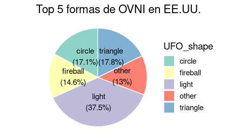
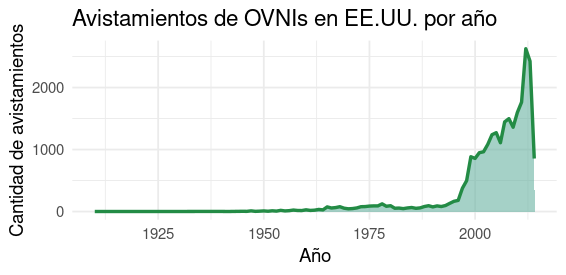
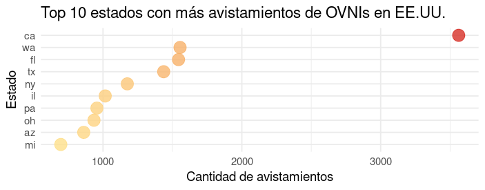
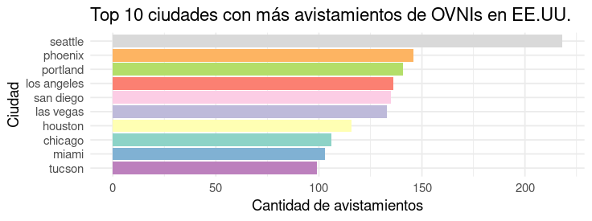

Desde la década de 1940, miles de personas han reportado avistamientos de objetos voladores no identificados en Estados Unidos. Este sitio recopila datos reales procesados con herramientas estadísticas para revelar patrones interesantes sobre las formas, ubicaciones y tiempos de estos fenómenos.
Si bien muchas explicaciones pueden apuntar a fenómenos naturales o creaciones humanas, los reportes siguen generando debate público, interés científico y teorías que capturan la imaginación popular.
Se han reportado OVNIs de muchas formas distintas. En este gráfico tipo gráfico de área polar se muestran las 5 más frecuentes en los reportes de testigos en Estados Unidos.
A lo largo de los años, los reportes han mostrado subidas y bajadas. ¿Coinciden con eventos globales, lanzamientos de películas o avances tecnológicos? Este gráfico de área nos da pistas.
Algunos estados muestran una tendencia notablemente más alta de avistamientos. Este gráfico de burbujas permite comparar visualmente la concentración de eventos por estado.
Analizando la variable hora del día, descubrimos un patrón interesante. Este gráfico de densidad de avistamientos por hora revela en qué momentos del día ocurren más reportes.

- El término "platillo volador" se popularizó en 1947 tras el testimonio de Kenneth Arnold, piloto que describió objetos volando como “platillos saltando sobre el agua”.
- La Fuerza Aérea de EE.UU. investigó los OVNIs bajo proyectos como Blue Book (1952-1969), donde se analizaron más de 12,000 reportes.
- En 2020, el Pentágono reconoció oficialmente la existencia de videos auténticos de fenómenos aéreos no identificados captados por pilotos militares.
Esta página fue desarrollada por Barbara Molina y Maria Pinto como una exploración independiente del fenómeno OVNI en EE.UU. mediante análisis de datos abiertos.
_"No todos los que miran al cielo buscan respuestas... pero todos los datos sí pueden dárnoslas."_